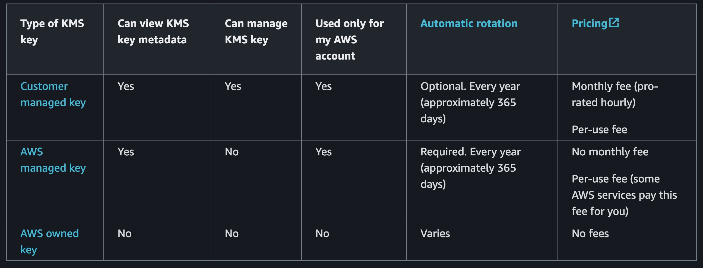

AWS RDS Encryption 評估
Contents
Intro
這篇筆記快速紀錄 AWS RDS Encryption for Compliance requirement.
Encrypting Amazon RDS resources [link]
- Data at rest encryption, 包含: DB instance, logs, snapshot, read replica, and automated backup.
- AWS 使用 AES-256 加密演算法替 RDS 加密 / 解密。
- AWS 使用本身的 AWS Key Management Service (KMS) 來管理加密金鑰。
- AWS KMS 在通過 美國聯邦資訊處理標準 FIPS 140-2 認證的硬體上 儲存 / 產生 客戶的金鑰。ref
- AWS KMS - Customer keys and AWS keys 比較表格

其他資訊
Author
LastMod 2024-09-09 (6e90b12)